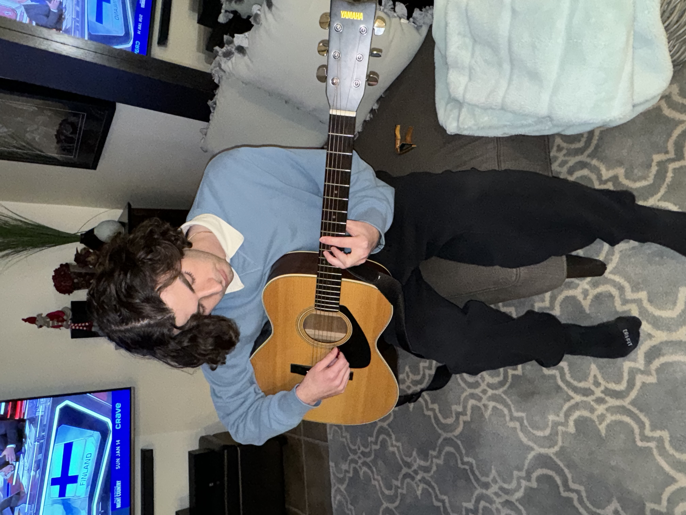

ABOUT ME

Hi, my name is Justin Kwinecki, I am a level ll Software Engineering student
at McMaster University. My passion for problem-solving and learning has led me to pursue
a career in the ever-changing field of technology. In my first year of Engineering I
achieved a GPA of 3.9, making the Dean's Honour List and
so far in my second year I have a perfect 4.0 GPA.
As a software engineer, I am particularly interested in Machine Learning
and Cyber Security and as an individual, I strive for excellence and complexity.
In my spare time, I am a self-taught guitarist with a passion for classic and indie-rock. I am also
an avid sports fan and have played competitive hockey my whole life.
GET IN TOUCH!
 Linkedin
Linkedin
 GitHub
GitHub
 jjkwinecki@gmail.com
jjkwinecki@gmail.com